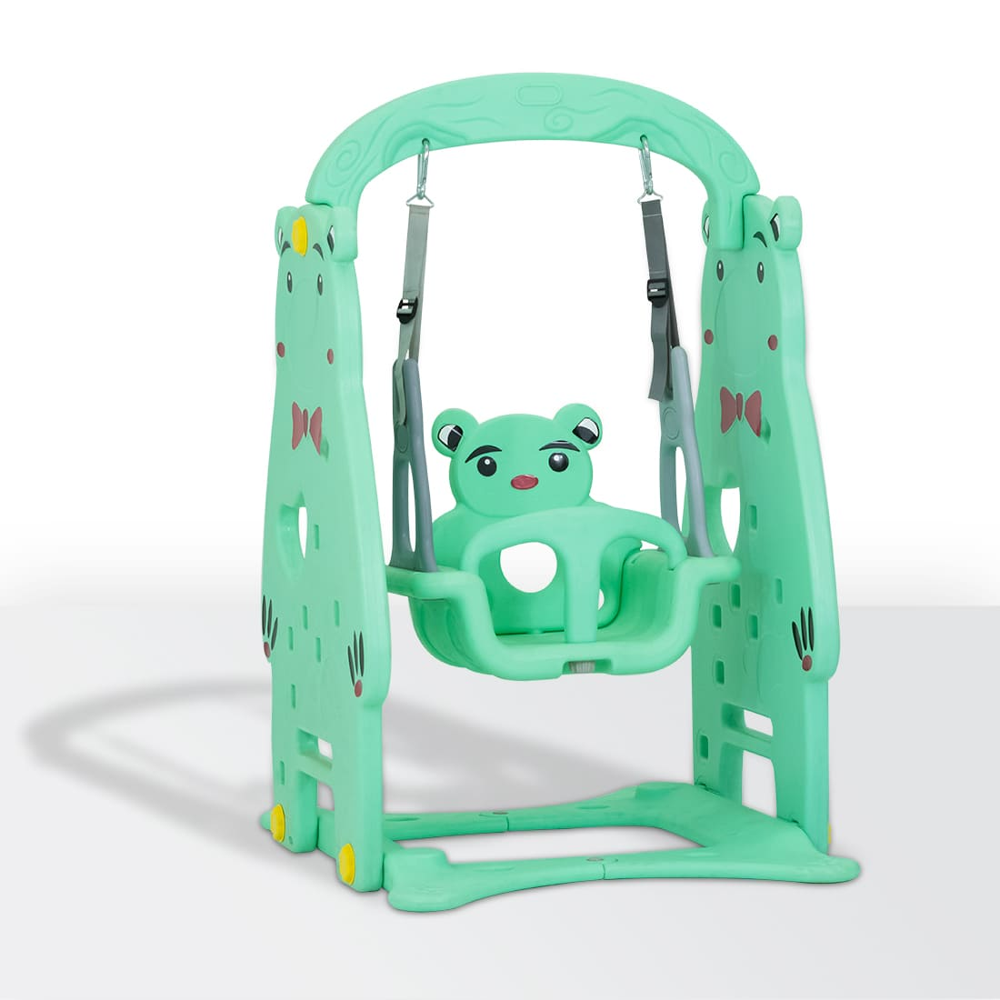

A swing game typically involves the use of a swing set, where players enjoy various activities centered around swinging. Here are a few ideas for swing games:
- Swing Jump Challenge:
- Players take turns swinging as high as they can and then jumping off at a designated point. The goal is to see who can jump the farthest or land on a specific target. Safety precautions should be taken, such as ensuring a soft landing area.
- Swing Tag:
- In this game, one player is "it" and must try to tag the others. The twist is that players can only move by swinging. The person who is "it" can tag others either while they are swinging or by waiting for them to slow down. Once tagged, the new player becomes "it."
- Swing Races:
- Players compete to see who can reach a certain height or complete a number of swings the fastest. This can be a timed event, where the winner is the one who achieves the goal in the shortest time.
- Swing and Catch:
- One player swings while another stands a short distance away and throws a ball or beanbag for the swinger to catch. The challenge is to time the throws and catches correctly. Points can be awarded for successful catches, and the roles can be switched after a set number of attempts.
- Swing Obstacle Course:
- Set up a series of challenges that players must complete while swinging. This can include swinging to knock down targets, grabbing objects from the ground while in motion, or swinging to reach a specific point. The course can be timed, and the player who completes it the fastest wins.
- Swing High Five:
- Players on adjacent swings try to synchronize their swings so they can give each other a high five at the peak of their swings. This requires coordination and teamwork, and can be a fun cooperative challenge.